Each heatmap summarizes co-occurrence of story segments across clauses,
using the processed assignment file
data/processed/<story>/clauses_to_segments_set.csv.
Every row is one clause; the column segment_ids is a set of segment indices (1-based) that
clause was linked to (the same “fan-out” structure used elsewhere in this project).
For a story with N segments, the pipeline builds one binary vector per segment,
with length equal to the number of clauses. Entry j is 1 if segment i appears in clause
j’s segment_ids, and 0 otherwise. Pairs of segments that tend to appear together
in the same clauses get vectors that rise and fall together; segments that rarely co-occur get vectors that
are more independent.
For each pair of distinct segments i and j, the code calls
scipy.stats.pearsonr
on the two binary vectors. That value is the off-diagonal entry in the heatmap (the diagonal is left unset in
the matrix used for plotting). The static PNG on this page is produced by
plot_middle_level in pearson_heatmap.py, which uses
tools/plot_matrix.plot_matrix: a Seaborn heatmap with the "cool" colormap,
axes labeled by segment id, and light grid lines every five segments.
How to read it: warmer colors mean stronger positive correlation between two segments’ presence across clauses (they co-occur more than uncorrelated segments would). Negative values mean segments tend to appear in disjoint sets of clauses. The companion page Pearson p-value shows the same pairs with emphasis on statistical significance at p ≤ 0.05.
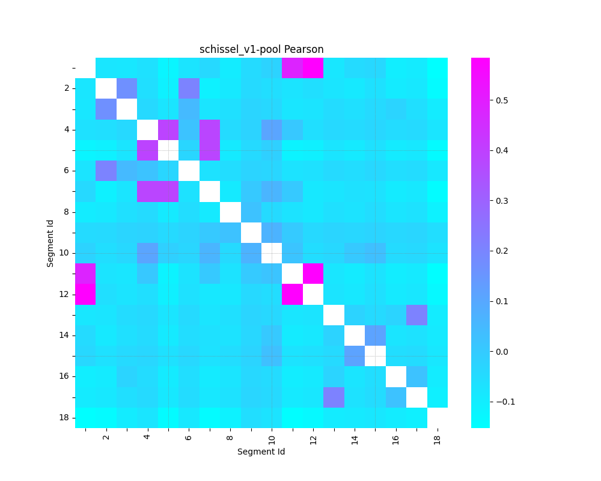
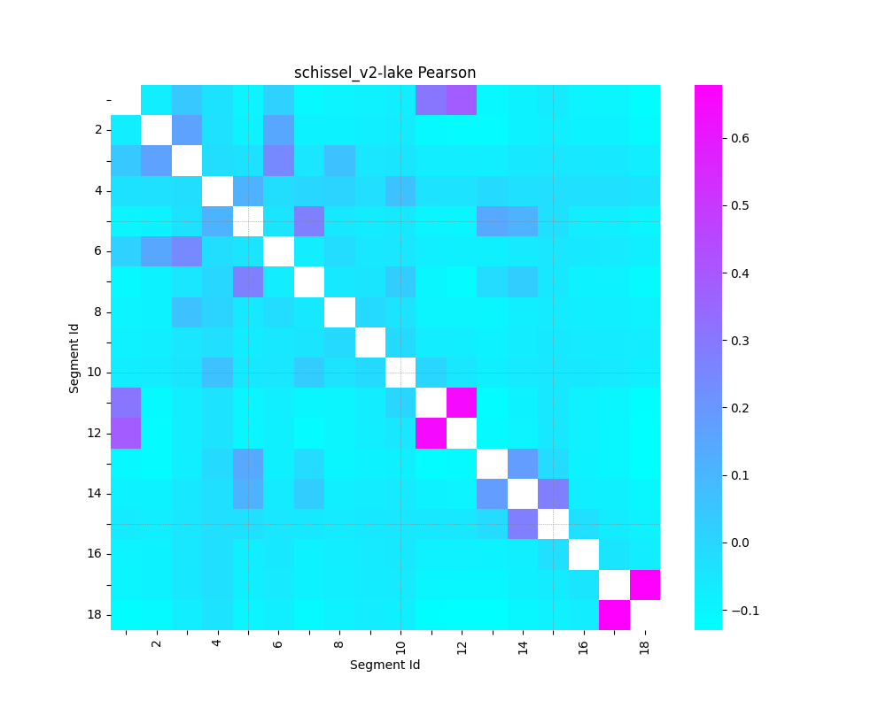
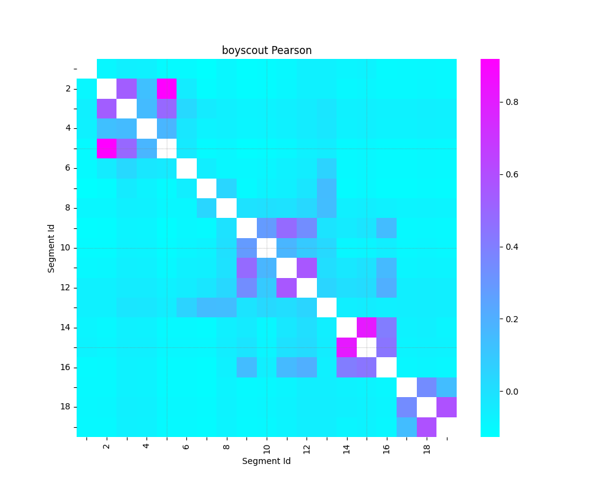
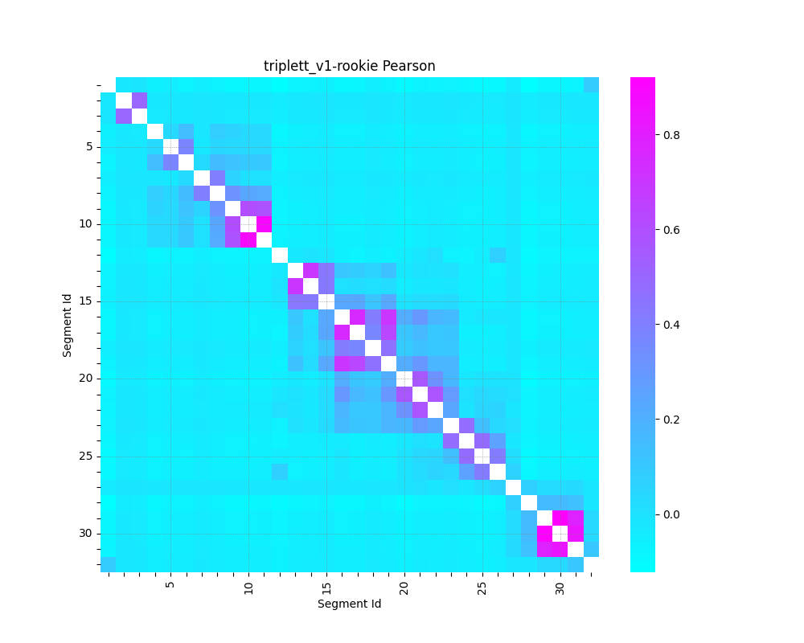
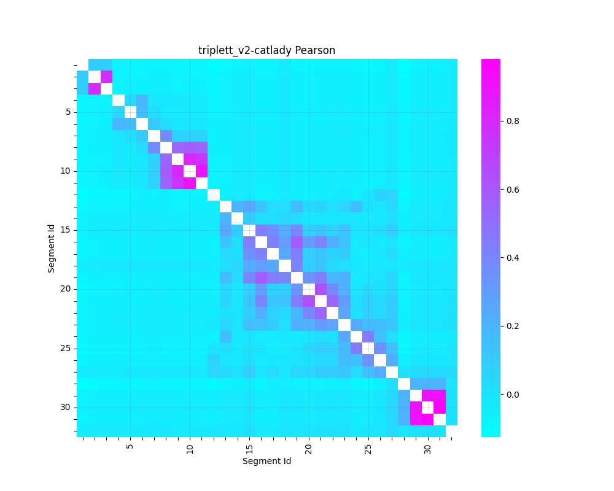
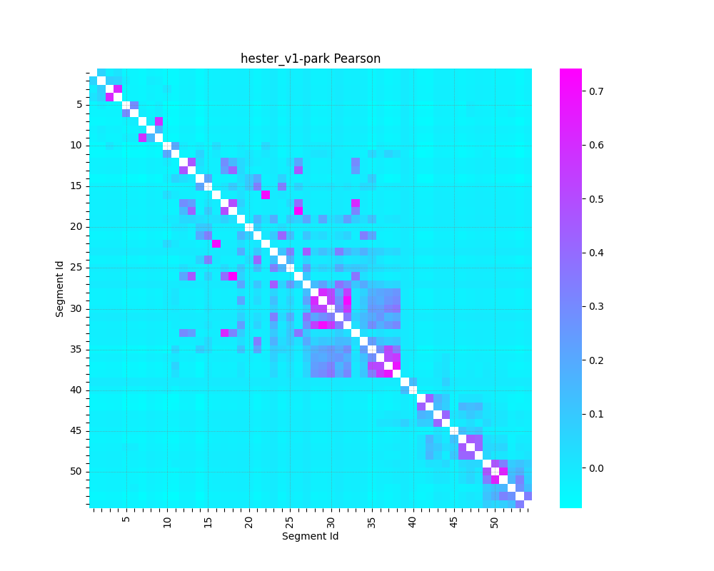
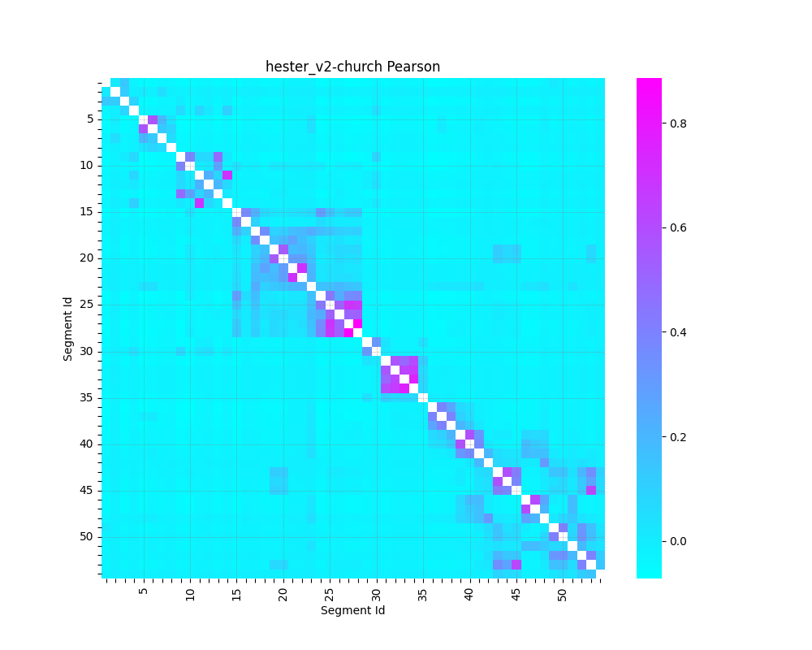
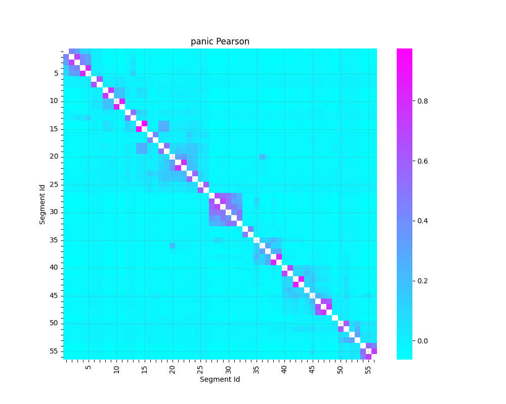
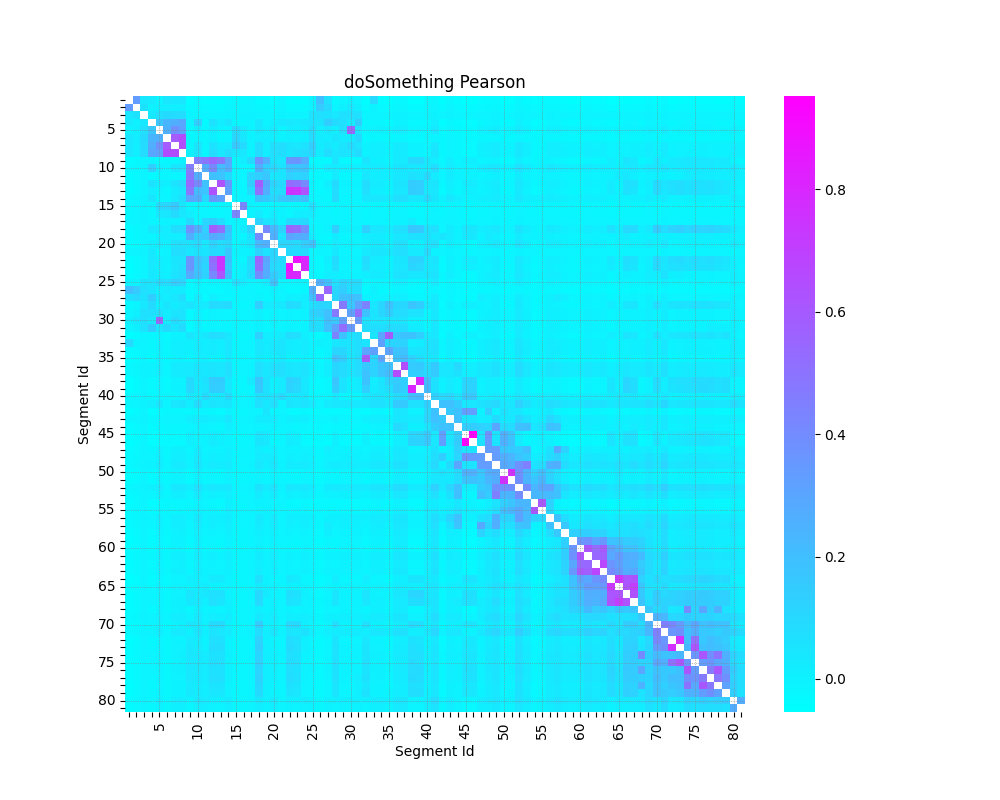
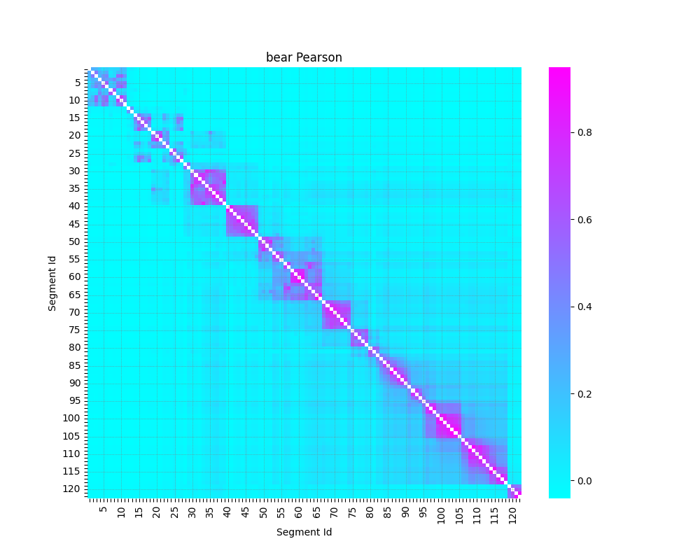
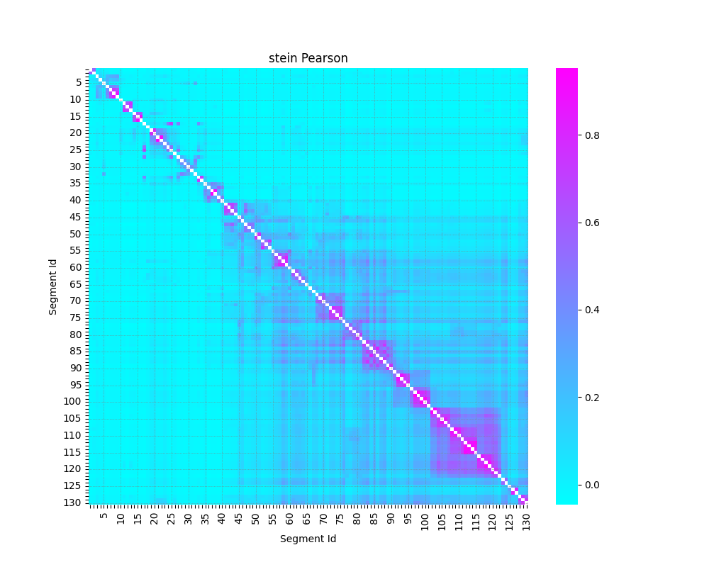
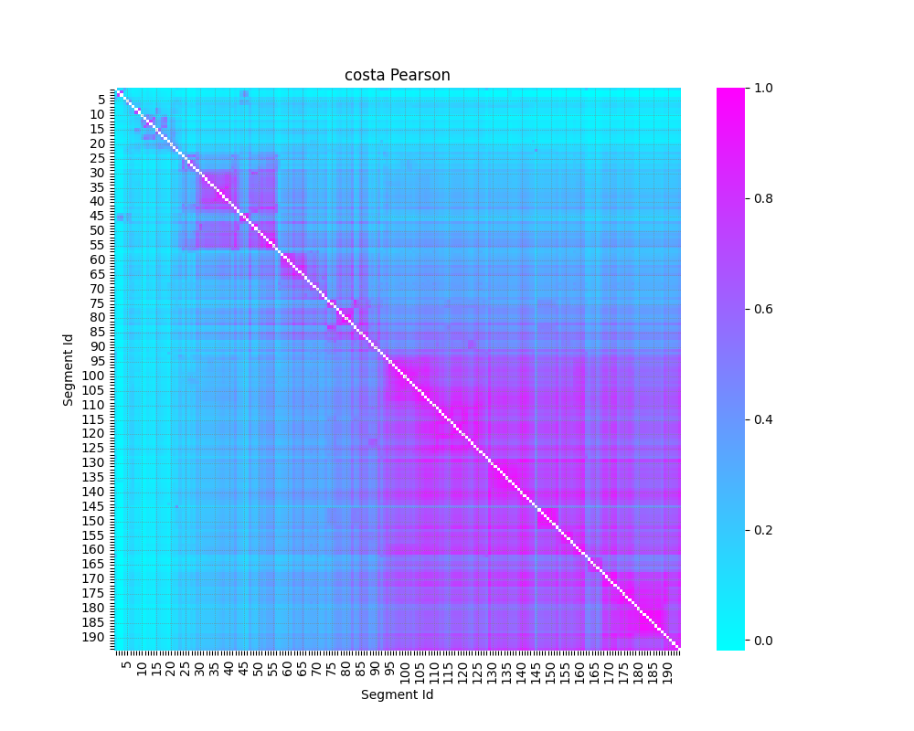